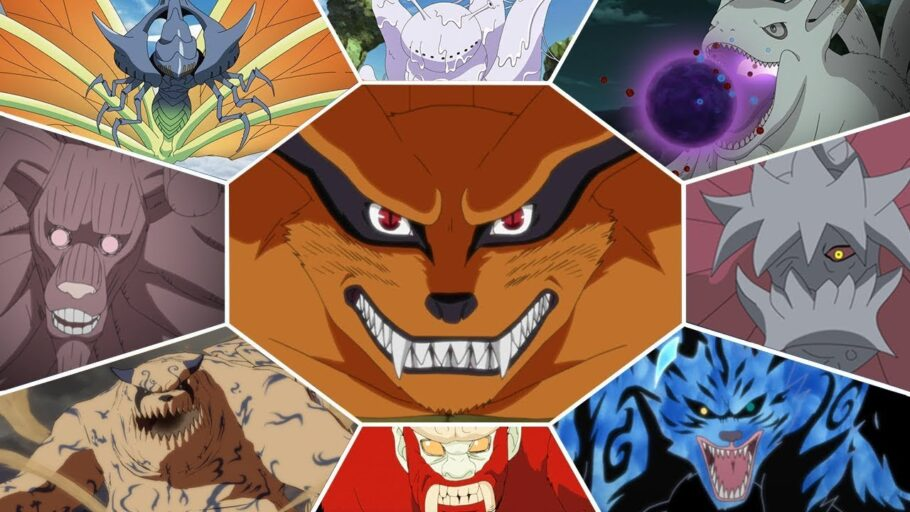

A Akatsuki foi fundada originalmente por Yahiko durante a Terceira Guerra Mundial Shinobi, sendo constituída por ninjas de Amegakure que desejavam criar a paz para seu país de origem, que funcionava como um campo de batalha para três dos Cinco Grandes Países Shinobi. Yahiko insistia que suas ações assim como as ações dos membros restantes da Akatsuki eram feitas apenas para ajudar Nagato à trazer a paz mundial, embora Konan tenha alegado que era o carisma de Yahiko que mantinha o grupo unido e estimulado. Obito alega que foi ele quem motivou Yahiko à formar a organização e, assim, credita-se como o criador do grupo. Apesar de ele só ter se encontrado uma vez com Yahiko, o jovem ficou cauteloso com relação ao homem mascarado e não acreditou em sua afirmação de ser Madara Uchiha, Obito, porém, deixou uma impressão em Nagato, ao mesmo tempo em que prometeu esperar por ele e seu amigo quando eles decidirem procurar o seu conselho.
Em seus primeiros dias, a Akatsuki ganhou fama e reconhecimento em Amegakure, chamando a atenção de Hanzou da Salamandra — um ninja de renome mundial e líder do país. Acreditando que o grupo estava se tornando uma ameaça ao seu governo, além de ser incentivado por Danzou Shimura, que o fez acreditar que a Akatsuki estava conspirando para derrubá-lo, Hanzou se aproximou da organização e afirmou falsamente que ele queria usá-los como um eixo para negociar a paz entre Konohagakure, Iwagakure e Sunagakure. No entanto, Hanzou traiu a Akatsuki e, trabalhando em conjunto com Danzou Shimura da Anbu de Konohagakure, sequestraram Konan e orquestraram a morte de Yahiko. Após se sincronizar com a Estátua Demoníaca do Caminho Exterior e tentar se vingar dos assassinos de Yahiko, utilizando o cadáver de seu amigo como um recipiente e passando a usar o nome Pain, Nagato se tornou o novo líder da Akatsuki e assumiu o controle de Amegakure após uma guerra civil.
Após a morte de Yahiko e a transição de Nagato para Pain, os objetivos da Akatsuki mudaram para a dominação mundial. Nagato mencionou um processo de três etapas para conseguirem cumprir este objetivo. Em primeiro lugar, eles planejavam obter uma grande quantidade de dinheiro para apoiar a sua organização. Em segundo lugar, eles planejavam criar um grupo de ninjas mercenários leais apenas a Akatsuki. Para construir sua reputação, eles planejavam aceitar qualquer missão abaixo do custo normal e operar fora dos fundos excedentes ganhos na primeira parte de seu plano. Pelo fato de não haver nenhuma guerra, muitas das aldeias shinobi mais poderosas e conhecidas não poderiam se dar ao luxo de realizar tais missões com esses preços baixos, levando os países menores a contratarem a Akatsuki ao invés das aldeias shinobi mais caras. Usando as Bijuu, a Akatsuki iria começar guerras e logo em seguida acabaria com elas, solidificando sua reputação e convencendo à todos os países a dependerem deles, encurralando assim o mercado de trabalho shinobi. Sem qualquer negócio, as outras aldeias shinobi entrariam em colapso devido à falta de fundos. Finalmente, depois de a Akatsuki se tornar a única grande força de shinobi existente, eles poderiam facilmente conquistar os outros países. Os membros não descobrem automaticamente os planos após se ingressarem na organização; Hidan não sabia nada sobre os objetivos até que ele tivesse sido um membro por algum tempo. Ao longo da série, a Akatsuki selou sete das nove Bijuu antes do início da Quarta Guerra Mundial Shinobi.

No entanto, a verdadeira intenção de Nagato para este plano não envolvia fazer a Akatsuki conquistar as outras nações, mas sim usar o poder das Bijuu, como forma de assustar o mundo para não lutarem mais. Ao dominar o chakra das Bijuu para criar um poderoso kinjutsu, a Akatsuki poderia esmagar imediatamente um lado de uma guerra e assustar o outro lado de continuar a luta. Isto é, até que finalmente esquecessem esse medo e a inevitabilidade da guerra levasse a outra luta, onde o kinjutsu seria usado novamente. Assim, o ciclo se repetiria, criando pequenos períodos de paz em uma cadeia infindável de ódio.